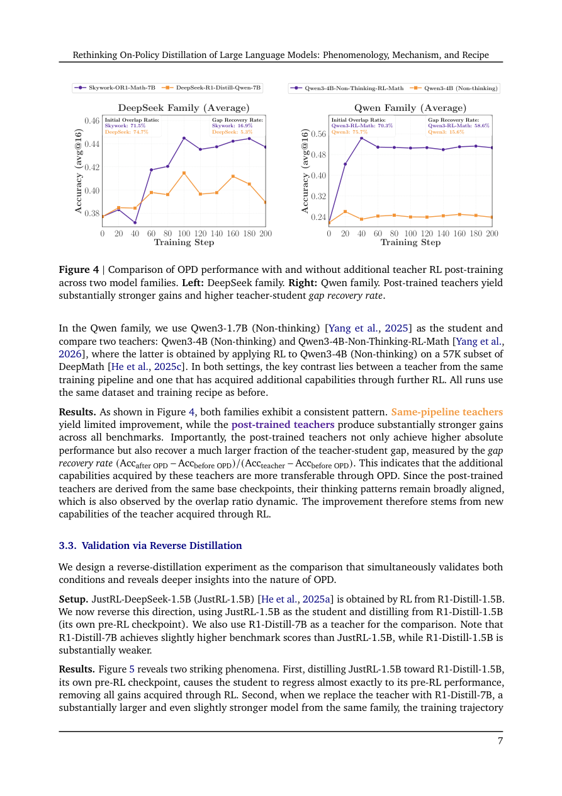
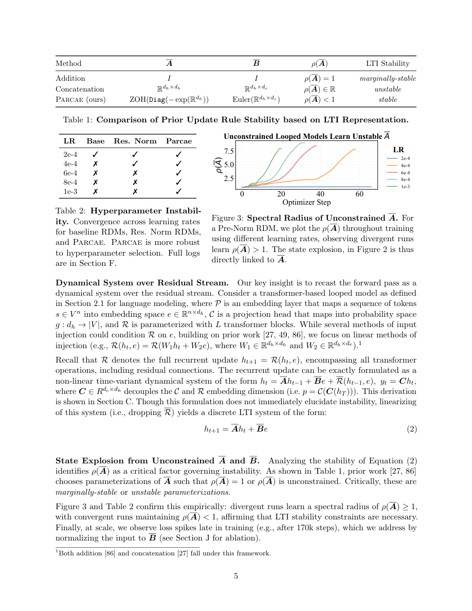
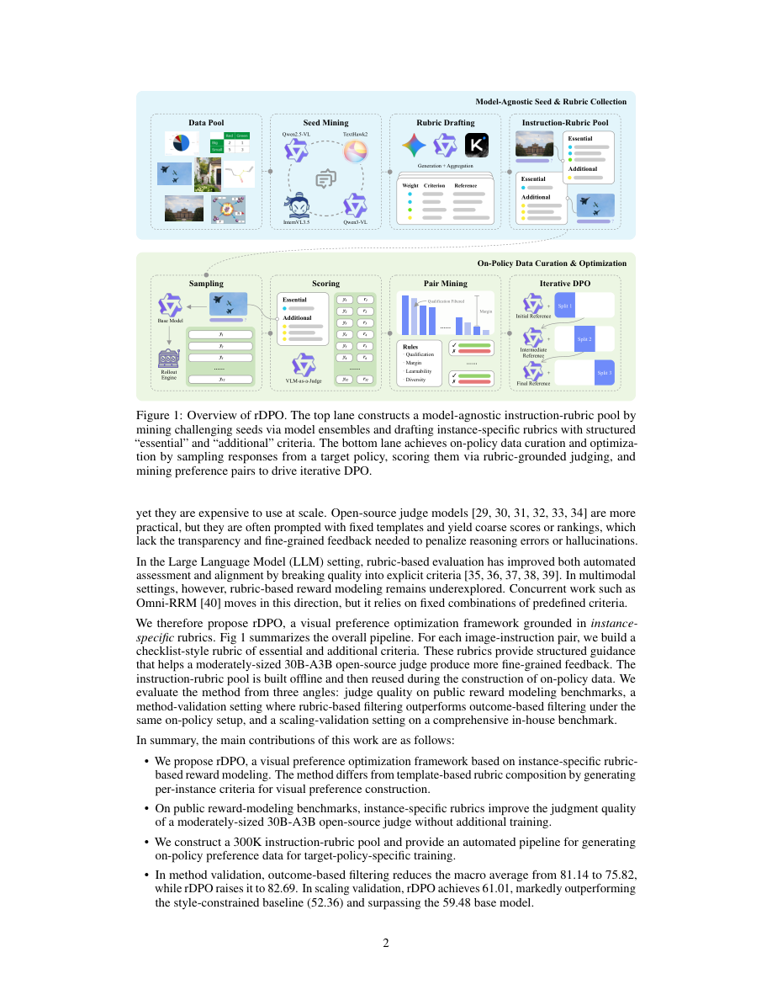

#1
★ 8/10
Rethinking On-Policy Distillation of Large Language Models: Phenomenology, Mechanism, and Recipe
重新审视大语言模型的在线策略蒸馏：现象学、机制与实践方案

图 Figure · Page 7 of paper
🎯 两个关键条件决定在线策略蒸馏成败，并提出实用修复方案
Two key conditions determine when on-policy LLM distillation succeeds, with token-level mechanistic insights and practical recovery strategies.
| 维度 | 中文 | English |
|---|---|---|
| ❓ 待解决 的问题 |
在线策略蒸馏（OPD）是训练小型大语言模型的核心技术——让学生模型从更强的教师模型的输出中学习。但研究人员对它何时成功、何时失败以及背后的原因知之甚少。缺乏清晰的机制理解，导致实践中OPD表现不佳时无从应对。本文核心问题是：OPD成功的精确条件是什么？在词元级别它是如何运作的？ | On-policy distillation (OPD) is widely used to train smaller LLMs by having them learn from a stronger teacher model's outputs, but researchers don't fully understand when and why it works or fails. Without a clear mechanistic picture, practitioners are essentially flying blind when OPD underperforms. This paper asks: what are the precise conditions that make OPD succeed, and how does it work at the token level? |
| 💡 解决 的亮点 |
- 发现OPD成功的两个必要条件：①师生模型思维模式兼容；②教师必须提供学生训练数据之外的真正新能力。 - 揭示词元级机制：成功的OPD表现为在学生访问的状态下对高概率词元的渐进对齐，少量共享词元集（约200-300个）集中了97%-99%的概率质量。 - 提出两种失败OPD的实用修复策略——离线策略冷启动与教师对齐提示选择，并指出OPD在长程蒸馏中的扩展性隐忧。 | - Identifies two necessary conditions for OPD success: (1) compatible thinking patterns between student and teacher, and (2) the teacher must provide genuinely novel capabilities beyond the student's training distribution. - Reveals a token-level mechanism: successful OPD progressively aligns high-probability tokens at student-visited states, with a tiny shared token set (just ~200–300 tokens) capturing 97–99% of total probability mass. - Proposes two practical recovery strategies for failing OPD — off-policy cold start and teacher-aligned prompt selection — and raises a fundamental scalability concern for long-horizon distillation. |
| 🧪 实验 内容 |
实验在数学推理基准上进行，包括MATH-500、AMC、AIME和Minerva Math，使用DeepSeek-R1和Qwen家族的1.5B和7B学生模型。基线包括标准OPD、GRPO（组相对策略优化）和离线蒸馏。作者在上述基准上评估模型准确率，并分析训练检查点的词元级概率分布变化。反向蒸馏（用更小教师的输出训练更大模型）被用作诊断思维模式兼容性条件的探针实验。 | Experiments were conducted on mathematical reasoning benchmarks including MATH-500, AMC, AIME, and Minerva Math, using student models from the DeepSeek-R1 and Qwen families at 1.5B and 7B scales. Baselines include standard OPD, GRPO (group relative policy optimization), and offline distillation. The authors evaluate model accuracy on these benchmarks and analyze token-level probability distributions across training checkpoints. Reverse distillation (training a larger model on a smaller teacher's outputs) serves as a diagnostic probe for the thinking-pattern compatibility condition. |
| 📊 实验 结果 |
同家族1.5B教师模型在分布上与学生模型无法区分，验证了能力差距不兼容时OPD失败的结论。成功OPD中，仅约200-300个共享高概率词元集中了97%-99%的概率质量。离线策略冷启动成功修复了失败的OPD场景并达到有竞争力的性能；教师对齐提示选择在MATH-500和AIME基准上持续提升OPD效果。同家族1.5B到7B的反向蒸馏几乎无提升，而跨家族蒸馏（如DeepSeek教师→Qwen学生）带来显著收益，验证了思维模式兼容性假说。 | Same-family 1.5B teachers are distributionally indistinguishable from student models, confirming OPD failure under incompatible capability gaps. The shared high-probability token set of only ~200–300 tokens accounts for 97–99% of total probability mass in successful OPD runs. Off-policy cold start recovers failing OPD scenarios and achieves competitive performance, while teacher-aligned prompt selection consistently improves OPD outcomes on MATH-500 and AIME benchmarks. Reverse distillation from a 1.5B to a 7B model within the same family shows near-zero improvement, while cross-family distillation (e.g., DeepSeek teacher → Qwen student) yields substantial gains, validating the thinking-pattern compatibility hypothesis. |
| 🏁 结论 | 本文首次对大语言模型的在线策略蒸馏建立了系统性机制解释，证明其成功取决于两个条件——思维模式兼容性与真正的新能力迁移，并揭示了长程蒸馏的根本性扩展挑战。所提出的冷启动和提示选择策略为失败OPD场景提供了切实可行的修复方案。 | This paper establishes the first systematic mechanistic account of on-policy distillation for LLMs, proving that success hinges on two conditions — compatible thinking patterns and genuine novel capability transfer — and exposing a fundamental scaling challenge for long-horizon distillation. The proposed off-policy cold start and teacher-aligned prompt selection provide actionable remedies for failing OPD scenarios. |
| 🔗 论文 链接 |
arXiv: 2604.13016v1 · 📥 PDF | |
⚙️ Method · 方法详解
作者对OPD进行了系统性的实证与机制研究。首先通过控制实验，改变师生模型的家族关系与能力差距，识别出决定OPD成败的两个关键条件。通过弱对强反向蒸馏实验验证"思维模式兼容性"条件，证明同家族的1.5B和7B模型从学生视角看在分布上无法区分。在词元层面，通过追踪训练过程中共享高频词元的概率分布变化，揭示OPD的内在机制。最后提出并验证两种实用修复策略：离线策略冷启动（先用离线蒸馏数据初始化再切换到在线策略）和教师对齐提示选择（过滤出教师能提供有效信号的训练提示）。
The authors conduct a systematic empirical and mechanistic study of OPD. They first run controlled experiments varying teacher-student family relationships and capability gaps to identify the two governing conditions for OPD success/failure. They validate the "compatible thinking patterns" condition through weak-to-strong reverse distillation experiments, showing that same-family 1.5B and 7B models are distributionally indistinguishable from the student's view. At the token level, they probe training dynamics by tracking probability distributions over shared high-frequency tokens across training steps. Finally, they propose and evaluate two practical interventions: off-policy cold start (initializing with offline distillation data before switching to on-policy) and teacher-aligned prompt selection (filtering training prompts to those where the teacher can provide meaningful signal).
📐 Key Formulas · 关键公式
\[\mathcal{L}_{\text{OPD}} = \mathbb{E}_{x \sim \mathcal{D},\, y \sim \pi_{\theta}}\left[ D_{\mathrm{KL}}\!\left(\pi_T(\cdot \mid x, y_{
💡 在线策略蒸馏的核心训练目标：对学生模型自身生成的轨迹，最小化教师与学生在每个位置的输出分布之间的KL散度，使学生在自己访问的状态下向教师对齐。
The core OPD training objective: minimize the KL divergence between teacher and student output distributions at each token position, evaluated on trajectories sampled from the student's own policy — this is what makes it 'on-policy'.
\[\mathcal{S}^* = \{v \in \mathcal{V} : \pi_T(v|\cdot) \geq \epsilon\} \cap \{v \in \mathcal{V} : \pi_{\theta}(v|\cdot) \geq \epsilon\}\]
💡 共享高概率词元集合的定义：教师和学生模型都赋予概率超过阈值ε的词元集合。论文发现这个集合虽小（约200-300个词元），却集中了97%-99%的概率质量，是OPD成功的关键信号载体。
Definition of the shared high-probability token set: tokens that both the teacher and student assign probability above threshold ε. Though tiny (~200–300 tokens), this set carries 97–99% of total probability mass and is the primary channel through which successful OPD transfers knowledge.
🌟 Why It Matters · 为什么重要
OPD是大语言模型后训练中最广泛使用的技术之一，但长期以来都是黑箱操作——本文首次为研究者提供了诊断、理解和修复OPD失败的原则性框架。通过揭示词元级机制与可扩展性限制，本文直接指导了下一代推理模型蒸馏流程的设计。
OPD is one of the most widely used post-training techniques for LLMs, yet it has been applied largely as a black box — this paper gives researchers the first principled framework to diagnose, understand, and fix OPD failures. By revealing the token-level mechanics and scalability limits, it directly informs how the community should design distillation pipelines for next-generation reasoning models.
#2
★ 7/10
Parcae: Scaling Laws For Stable Looped Language Models
Parcae：稳定循环语言模型的扩展定律

图 Figure · Page 5 of paper
🎯 稳定循环架构Parcae，用固定参数逼近更大Transformer的性能
A stable looped LM architecture with scaling laws that matches larger Transformers using fixed parameters.
| 维度 | 中文 | English |
|---|---|---|
| ❓ 待解决 的问题 |
传统语言模型靠增加参数量来提升性能，但这会大幅增加显存开销。循环架构通过反复复用同一组层来增加计算量，而不增加参数，是一种潜在的高效替代方案。然而，现有循环模型训练不稳定，容易出现"残差爆炸"和损失突刺，难以在大规模场景中可靠使用。 | Traditional language models scale quality by adding more parameters, which increases memory costs. Looped architectures offer an alternative by reusing the same layer block repeatedly to gain more compute without more parameters, but existing looped models suffer from training instability — specifically residual explosion and loss spikes — making them unreliable at scale. |
| 💡 解决 的亮点 |
• 动力系统新视角：将循环过程建模为残差流上的非线性时变动力系统，通过线性近似进行稳定性分析，理论基础扎实。 • 不稳定根因定位：首次明确指出现有循环架构不稳定的根源在于注入参数的谱范数过大。 • Parcae稳定设计：通过对负对角参数化的离散化约束注入参数的谱范数，优雅地消除训练不稳定问题。 • 双重扩展定律：分别推导出训练阶段（循环次数与数据量）的幂律扩展规律，以及测试阶段的饱和指数衰减规律。 | • Novel dynamical systems view: looping is recast as a nonlinear time-variant dynamical system over the residual stream, enabling rigorous stability analysis via linear approximation. • Root cause diagnosis: instability in prior looped architectures is traced to large spectral norms in the injection parameters, a previously unidentified culprit. • Parcae's stable design: constrains spectral norm of injection parameters through discretization of a negative diagonal parameterization, elegantly eliminating the instability. • Dual scaling laws: derives predictable power-law scaling for training FLOPs (loop count vs. data) and a saturating exponential decay for test-time compute scaling. |
| 🧪 实验 内容 |
作者训练了从小规模到13亿参数的Parcae模型，在相同参数量和数据量预算下与现有循环架构（如Universal Transformer、循环GPT变体）及标准Transformer基线进行对比。评估指标包括验证集困惑度以及CORE和Core-Extended基准测试套件。扩展定律实验系统性地变化循环次数、参数量和训练数据量以拟合预测性幂律；测试时扩展实验则测量在推理阶段增加循环次数时的质量提升情况。 | The authors trained Parcae models ranging from small scales up to 1.3B parameters, comparing against prior looped architectures (e.g., Universal Transformers, looped GPT variants) and standard Transformer baselines under matched parameter and data budgets. Evaluation used validation perplexity and the CORE / Core-Extended benchmark suites. Scaling law experiments systematically varied loop count, parameter count, and training data to fit predictive power laws, while test-time scaling experiments measured quality improvement as inference-time loop count was increased. |
| 📊 实验 结果 |
与现有大规模循环模型相比，Parcae验证集困惑度最高降低6.3%。在13亿参数、固定参数量与数据量预算的条件下，与强Transformer基线相比，Parcae在CORE基准上提升2.99分，在Core-Extended基准上提升1.18分。尤其值得注意的是，Parcae达到了参数量为其两倍（26亿参数）的Transformer模型高达87.5%的质量水平，展现出出色的计算效率。测试时扩展遵循可预测的饱和指数衰减规律，证明循环次数是推理阶段可靠的算力调节旋钮。 | Parcae achieves up to 6.3% lower validation perplexity compared to prior large-scale looped models. At 1.3B parameters under a fixed parameter and data budget, Parcae improves CORE benchmark scores by 2.99 points and Core-Extended scores by 1.18 points over strong Transformer baselines. Notably, Parcae achieves up to 87.5% of the quality of a Transformer twice its size (2.6B parameters), demonstrating effective compute-efficient scaling. Test-time scaling follows a predictable saturating exponential decay, confirming loop count is a reliable compute knob at inference. |
| 🏁 结论 | Parcae证明了通过控制谱范数可以使循环语言模型架构保持稳定训练，且其训练阶段和测试阶段的扩展行为均遵循可预测的规律。这确立了循环架构作为一种有原则、计算高效的替代方案，可替代单纯堆叠Transformer参数量的传统扩展路径。 | Parcae demonstrates that looped language model architectures can be made reliably stable through spectral norm control, and that their scaling behavior — both during training and at test time — follows predictable laws. This establishes looped architectures as a principled, compute-efficient alternative to simply scaling up Transformer parameter counts. |
| 🔗 论文 链接 |
arXiv: 2604.12946v1 · 📥 PDF | |
⚙️ Method · 方法详解
作者将循环过程建模为残差流上的非线性时变动力系统，并通过线性近似分析其不稳定条件。研究发现，注入参数（每次循环迭代时将输入注入残差流的参数矩阵）的谱范数过大是不稳定的根本原因。为此，Parcae将注入矩阵参数化为具有负对角结构的连续时间系统的离散化形式，从数学上保证谱范数始终小于1。这一稳定化设计使可靠训练成为可能，并支持作者经验性地推导出如何在循环次数、参数量和数据量之间合理分配计算预算的扩展定律。
The authors model looping as a nonlinear time-variant dynamical system and use a linear approximation to analyze when it becomes unstable. They find that large spectral norms in the injection parameters (the parts that inject the input into each loop iteration) are the root cause. To fix this, Parcae parameterizes the injection matrix as a discretization of a continuous-time system with a negative diagonal structure, which mathematically guarantees the spectral norm stays bounded below 1. This stabilization enables reliable training and allows the authors to empirically derive scaling laws for how to allocate FLOPs across loop count, parameter count, and data volume.
📐 Key Formulas · 关键公式
\[\mathbf{h}_{t+1} = \mathbf{h}_t + f(\mathbf{h}_t, \mathbf{x}; \theta)\]
💡 循环动力系统的基本形式：每次循环后，残差流 h 更新为上一状态加上以输入 x 为条件的非线性变换，将循环过程建模为离散时间动力系统。
The core looped dynamical system: at each loop step, the residual stream h is updated by adding a nonlinear transformation conditioned on input x, framing looping as a discrete-time dynamical system.
\[\mathbf{A} = (\mathbf{I} + \Delta \mathbf{D})^{-1}, \quad \mathbf{D} < 0 \text{ (diagonal)}, \quad \|\mathbf{A}\|_2 < 1\]
💡 Parcae注入参数的稳定化参数化方式：将注入矩阵A定义为负对角矩阵D的离散化形式，数学上保证其谱范数严格小于1，从而确保训练稳定。
Parcae's stabilizing parameterization: the injection matrix A is defined as the discretization of a negative diagonal matrix D, mathematically guaranteeing its spectral norm stays strictly below 1 and ensuring stable training.
🌟 Why It Matters · 为什么重要
随着大语言模型训练成本急剧攀升，如何在不成比例增加模型规模的前提下提升每个FLOP的质量回报，是当前最重要的研究方向之一。Parcae提供了一种有理论支撑的稳定循环架构，并给出明确的扩展定律，为研究者和从业者提供了一个新的维度——循环深度——在训练和推理阶段灵活地以算力换质量。
As LLM training costs skyrocket, finding ways to get more quality per FLOP without proportionally growing model size is a critical research frontier. Parcae offers a theoretically grounded, stable looped architecture with explicit scaling laws, giving practitioners a new axis — loop depth — to trade compute for quality at both training and inference time.
#3
★ 7/10
Visual Preference Optimization with Rubric Rewards
基于评分标准奖励的视觉偏好优化

图 Figure · Page 2 of paper
🎯 用任务专属评分标准为视觉偏好优化提供细粒度奖励信号
rDPO uses instance-specific rubrics to generate fine-grained reward signals for visual preference optimization.
| 维度 | 中文 | English |
|---|---|---|
| ❓ 待解决 的问题 |
直接偏好优化（DPO）依赖能反映响应质量差异的偏好数据。现有方法通常依靠离线扰动或粗粒度的结果信号（如对/错），这对需要细粒度视觉推理的多模态任务来说并不适用，导致视觉语言模型的对齐效果不佳。 | Direct Preference Optimization (DPO) relies on high-quality preference data that captures meaningful quality differences between model responses. Existing methods typically use off-policy perturbations or coarse outcome-based signals (e.g., correct/incorrect), which are poorly suited to the nuanced, fine-grained reasoning required in multimodal visual tasks. This results in suboptimal alignment when training vision-language models. |
| 💡 解决 的亮点 |
• 任务专属评分标准：针对每个图像-指令对，自动生成包含必要和附加标准的清单式评分规则，实现标准级精细打分而非粗粒度判断。 • 在线策略数据构建：评分标准池离线构建后复用于构造在线策略偏好数据，将精细奖励信号与真实模型输出有机结合。 • 大幅提升裁判模型能力：基于评分标准的提示方式显著提升30B-A3B裁判模型性能，使其接近GPT-4.5水平。 | • Instance-specific rubrics: For each image-instruction pair, a checklist-style rubric with essential and additional criteria is automatically generated, enabling criterion-level scoring rather than coarse pass/fail judgment. • On-policy data construction: The rubric pool is built offline and reused to construct on-policy preference data, bridging the gap between rubric quality signals and realistic model outputs. • Massive judge improvement: Rubric-based prompting dramatically improves a 30B-A3B judge model, bringing it close to GPT-4.5-level performance on reward modeling benchmarks. |
| 🧪 实验 内容 |
作者在公开奖励建模基准上评估裁判质量，并在多个多模态下游基准上衡量对齐性能。基线方法包括基于结果的过滤方法（粗粒度对/错信号）和风格约束DPO基线。还在一个综合基准上进行了可扩展性评估。裁判模型采用30B-A3B，以GPT-4.5作为上限参考。 | The authors evaluated rDPO on public reward modeling benchmarks to assess judge quality, and on multiple downstream multimodal benchmarks to measure alignment performance. Baselines include outcome-based filtering (coarse correct/incorrect signal) and a style-constrained DPO baseline. A scalability evaluation was conducted on a comprehensive benchmark to test how well rDPO generalizes beyond the training distribution. The judge model used was a 30B-A3B model, compared against GPT-4.5 as an upper-bound reference. |
| 📊 实验 结果 |
• 在奖励建模基准上：基于评分标准的提示大幅提升30B-A3B裁判模型，使其接近GPT-4.5水平。 • 在下游多模态基准上：基于评分标准的过滤达到宏平均82.69，而基于结果的过滤从基础81.14下降至75.82。 • 在可扩展性基准上：rDPO得分61.01，优于风格约束基线（52.36）并超越基础模型（59.48），较强基础模型提升约1.5分，较约束基线提升约8.65分。 | • On reward modeling benchmarks: rubric-based prompting massively improves the 30B-A3B judge, bringing it close to GPT-4.5 performance. • On downstream multimodal benchmarks: rubric-based filtering achieves a macro average of 82.69, vs. outcome-based filtering which drops the score to 75.82 from a 81.14 base. • On the scalability benchmark: rDPO scores 61.01, outperforming the style-constrained baseline (52.36) and surpassing the 59.48 base model — a gain of ~1.5 points over the strong base and ~8.65 points over the constrained baseline. |
| 🏁 结论 | rDPO证明了将在线策略数据构建与任务专属标准级评分标准奖励相结合，在多模态视觉推理任务上显著优于粗粒度结果信号偏好优化。本文确立了评分标准引导的偏好优化作为视觉语言模型对齐的实用且可扩展方法的地位。 | rDPO demonstrates that combining on-policy data construction with instance-specific, criterion-level rubric rewards substantially outperforms coarse outcome-based preference optimization for multimodal visual reasoning tasks. This work establishes rubric-guided preference optimization as a practical and scalable approach to aligning vision-language models. |
| 🔗 论文 链接 |
arXiv: 2604.13029v1 · 📥 PDF | |
⚙️ Method · 方法详解
rDPO针对训练集中每个图像-指令对，自动生成包含必要和附加标准的清单式评分规则。该评分标准池离线构建并复用。在构造训练数据时，评分标准作为结构化提示输入给裁判模型（30B-A3B），对在线策略生成的响应进行标准级打分，产生更丰富准确的偏好标签。最终基于这些评分标准奖励构成的偏好对，通过DPO对视觉语言模型进行微调。
For each image-instruction pair in the training set, rDPO automatically generates a checklist-style rubric that lists both essential and additional criteria for evaluating responses. This rubric pool is built offline and stored for reuse. During training data construction, the rubrics are used as structured prompts for a judge model (30B-A3B) to score on-policy responses at a criterion level, producing richer and more accurate preference labels. The resulting preference pairs — scored with rubric-guided rewards rather than coarse outcome signals — are then used to fine-tune the vision-language model via DPO.
📐 Key Formulas · 关键公式
\[\mathcal{L}_{\text{DPO}} = -\mathbb{E}_{(x, y_w, y_l)} \left[ \log \sigma \left( \beta \log \frac{\pi_\theta(y_w|x)}{\pi_{\text{ref}}(y_w|x)} - \beta \log \frac{\pi_\theta(y_l|x)}{\pi_{\text{ref}}(y_l|x)} \right) \right]\]
💡 DPO的核心损失函数：通过最大化被偏好响应与非偏好响应之间的对数概率比差值，直接优化模型策略，无需显式奖励模型。β控制偏离参考策略的程度。
The core DPO loss: directly optimizes the policy by maximizing the log-probability ratio gap between the preferred (y_w) and dispreferred (y_l) responses relative to a reference policy, without an explicit reward model. β controls deviation from the reference policy.
🌟 Why It Matters · 为什么重要
细粒度奖励信号一直是多模态模型对齐的关键瓶颈，rDPO通过自动化生成实例级评分标准提供了原则性、可扩展的解决方案。随着视觉语言模型在复杂推理任务中的广泛部署，本文为无需昂贵人工标注即可构建高质量偏好数据提供了可参考的范式。
Fine-grained reward signals are a long-standing bottleneck for aligning multimodal models, and rDPO offers a principled, scalable solution by automating rubric generation per instance. As vision-language models are increasingly deployed in complex reasoning tasks, this work provides a blueprint for building better preference data without expensive human annotation.
📚 More Papers 更多值得关注的论文
Learning Versatile Humanoid Manipulation with Touch Dreaming
Learning Versatile Humanoid Manipulation with Touch Dreaming
🏁 结论：
🧑🔬 Yaru Niu, Zhenlong Fang, Binghong Chen et al.
Tree Learning: A Multi-Skill Continual Learning Framework for Humanoid Robots
Tree Learning: A Multi-Skill Continual Learning Framework for Humanoid Robots
🏁 结论：
🧑🔬 Yifei Yan, Linqi Ye
FastGrasp: Learning-based Whole-body Control method for Fast Dexterous Grasping with Mobile Manipulators
FastGrasp: Learning-based Whole-body Control method for Fast Dexterous Grasping with Mobile Manipulators
本文提出了FastGrasp，一种面向移动机械臂的基于学习的全身控制方法，旨在实现快速灵巧抓取。该方法通过协调移动底盘与机械臂的整体运动，解决了高速运动下的冲击稳定性和实时全身协调难题。系统还具备对多样化物体和场景的泛化能力，突破了固定底座、简单夹爪和触觉响应迟缓等传统限制。
This paper presents FastGrasp, a learning-based whole-body control method for mobile manipulators designed to achieve fast and dexterous grasping. It coordinates the mobile base and robotic arm together to address challenges like impact stabilization at high speeds and real-time whole-body coordination. The approach also generalizes across diverse objects and scenarios, overcoming limitations of fixed bases, simple grippers, and slow tactile responses.
🏁 结论：学习驱动的全身协调可实现移动机械臂的快速灵巧抓取
Learning-based whole-body coordination enables fast, stable, and generalizable dexterous grasping for mobile manipulators.
🧑🔬 Heng Tao, Yiming Zhong, Zemin Yang et al.
Cycle-Consistent Search: Question Reconstructability as a Proxy Reward for Search Agent Training
Cycle-Consistent Search: Question Reconstructability as a Proxy Reward for Search Agent Training
🏁 结论：
🧑🔬 Sohyun An, Shuibenyang Yuan, Hayeon Lee et al.